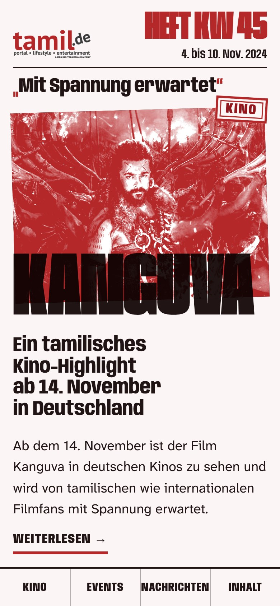
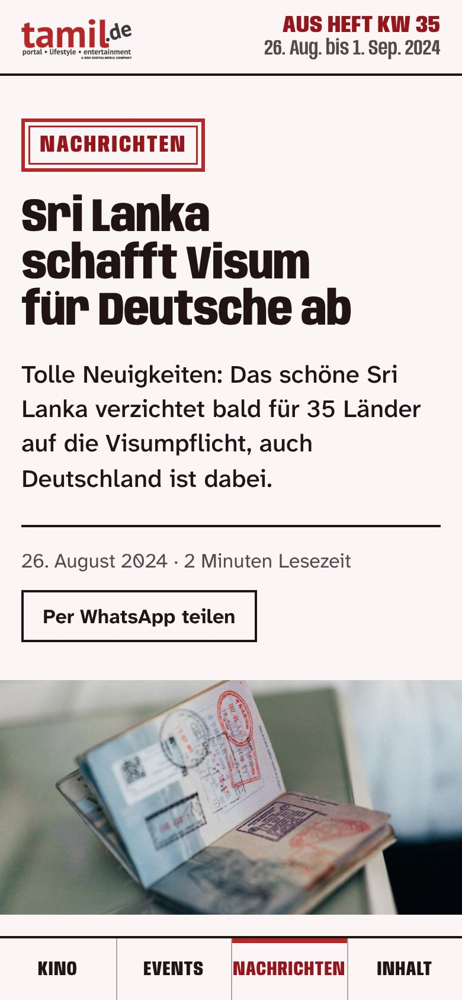
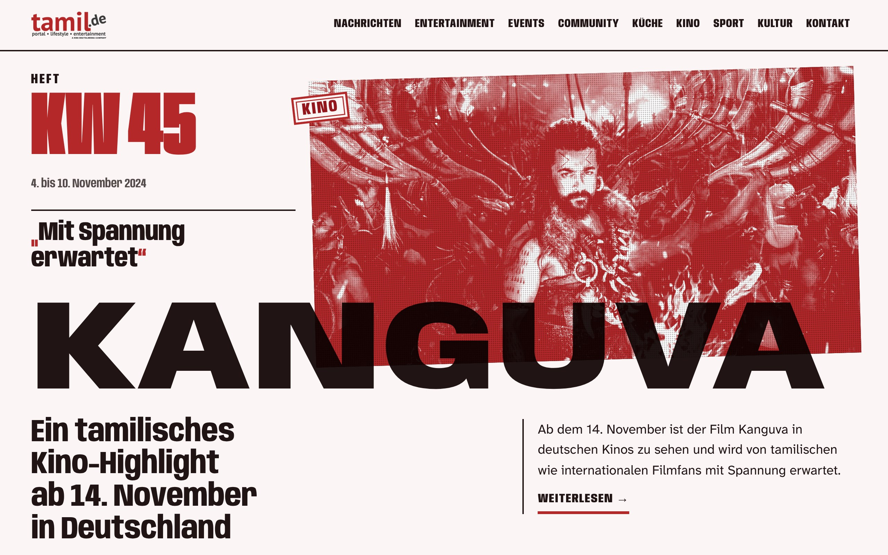
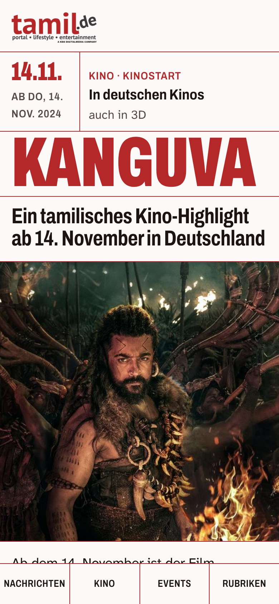
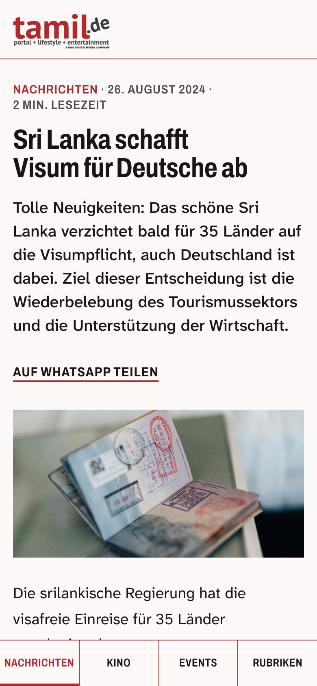
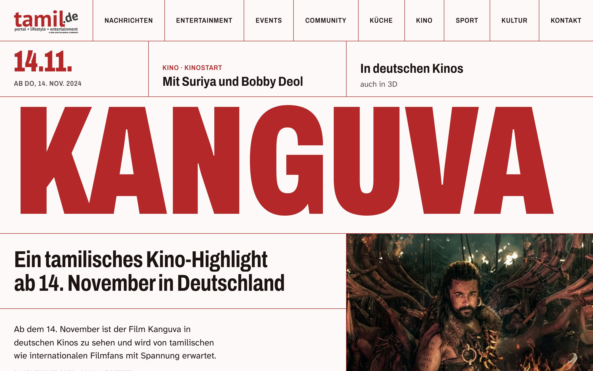
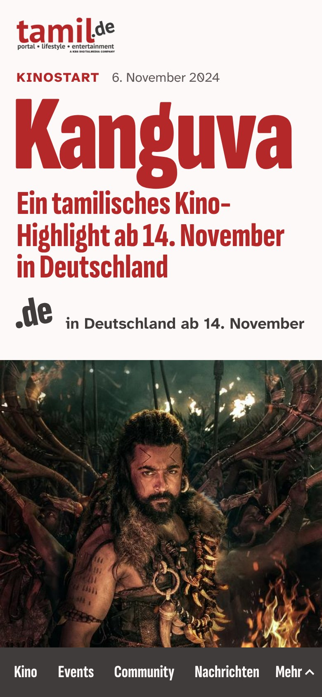
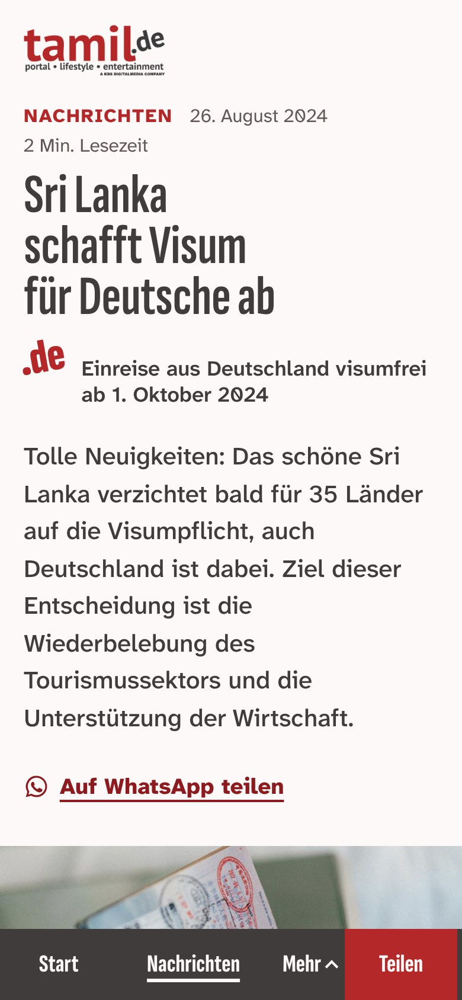
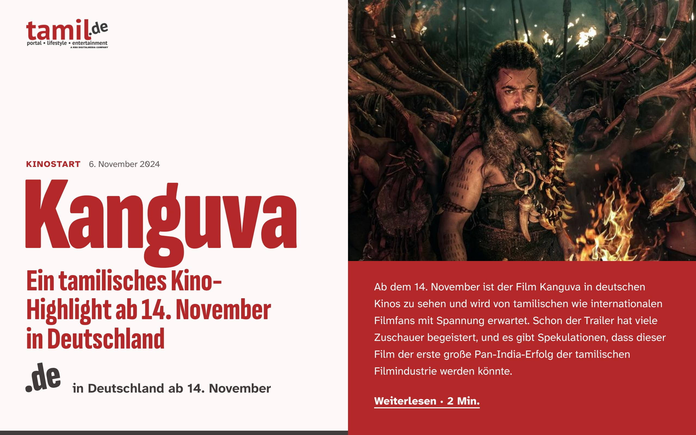

Vier Richtungen wurden skizziert und unabhängig geprüft. Diese Seite zeigt die drei, die die Prüfung bestanden haben. Gesucht ist die eine Richtung, die als Nächstes zur vollständigen Probeseite ausgebaut wird.
Gleiche Inhalte
Alle Richtungen zeigen dieselben echten Beiträge. So fällt der Blick auf die Gestaltung und nicht auf das Thema. Der Aufmacher „Kanguva“ stammt aus dem Archiv (November 2024), der Diwali-Termin aus dem News-Radar (November 2026).
Skizzen, keine fertigen Seiten
Je Richtung gibt es den ersten Bildschirm der Startseite, den Abschnitt „Diese Woche“ und den Kopf eines Artikels. Menüs und weitere Seiten folgen erst mit der Probeseite.
Knapp bestanden
Jede Richtung brauchte eine Überarbeitung und hat die Schwelle von 28 Punkten danach genau erreicht. Was noch offen ist, steht bei jeder Richtung dabei.
Richtung Zine
Das Wochenheft
Jede Woche ein neues Cover: Über der Geschichte steht ein Heftkopf, das Titelwort ist groß über ein rot gedrucktes Foto gesetzt.

Startseite am Handy, erster Bildschirm

Artikel am Handy

Startseite am Desktop, erster Bildschirm
Vorbild: Burnt Roti, ergänzend WEIRDO zine
Prüfung: 28 von 40 Punkten, Schwelle 28
Trägt schon
Das Titelwort: am Handy schmal und hoch, am Desktop breit über die ganze Seite.
Der Artikel bleibt ruhig und ist auch für Ältere gut lesbar.
Spielorte als Streifen: 11 Kinos und 2 Kinos funktionieren ohne Foto.
Vor dem Ausbau zu klären
„Diese Woche“ soll deutlicher als Schwarzes Brett lesbar sein.
Der rote Druck ist bisher nur an einem dunklen Filmbild gezeigt; ein helles Foto fehlt als Gegenprobe.
Heftdatum und Termine müssen aus demselben Jahr stammen.
Ein rotes Linienraster gibt jeder Geschichte und jeder Stadt ein eigenes Feld. Das Stichwort füllt die ganze Breite, darüber steht wie im Fahrplan, wann und wo.

Startseite am Handy, erster Bildschirm

Artikel am Handy

Startseite am Desktop, erster Bildschirm
Vorbild: Highsnobiety und Hypebeast
Prüfung: 28 von 40 Punkten, Schwelle 28
Trägt schon
Das Cover am Desktop: Stichwort über die volle Breite, die Linien laufen bis in „Diese Woche“ weiter.
Das Ortsraster: 11 Kinos, 2 Kinos und eine Aula in Basel sind sofort ablesbar.
Der Artikel ist wirklich ruhig, eine Spalte, große Schrift.
Vor dem Ausbau zu klären
Die Zeile über dem Cover braucht eine Regel für Nachrichten ohne Termin.
Leere Felder im Ortsraster wirken unfertig.
Die Leiste unten ist für Ältere zu klein, und Kino darf lebendiger klingen als Nachrichten.
Die Seite ist aus den zwei Hälften des Logos gebaut: das rote „tamil“ als große Schrift, das schiefe graue „.de“ als Zeichen dafür, in welchem Land eine Geschichte ankommt.

Startseite am Handy, erster Bildschirm

Artikel am Handy

Startseite am Desktop, erster Bildschirm
Vorbild: i-D, ergänzend The Pudding
Prüfung: 28 von 40 Punkten, Schwelle 28
Trägt schon
Laut auf der Startseite, still im Artikel: genau der gewünschte Wechsel.
„Diese Woche“ als Aushang: große Titel, Ort und Tag daneben, keine Bilder nötig.
Die graue Rubrikleiste sitzt am Handy in Daumenreichweite.
Vor dem Ausbau zu klären
Am Desktop fehlt die Navigation im ersten Bildschirm.
Das Länderzeichen muss sich ohne Erklärung erschließen, sonst bleibt es Schmuck.
Am Handy liest sich das Cover noch eher wie ein Artikelkopf.
Eine Richtung, die weiterverfolgt wird. „Keine davon“ ist auch eine Antwort.
Was an ihr gefällt und was stört, gern in Stichworten.
Wenn etwas aus einer anderen Richtung übernommen werden soll: welches Element.
Wie es danach weitergeht
Die gewählte Richtung wird zur Probeseite mit allen Seitentypen: Start, Artikel, Rubrik, Events, Kinoliste, Kontakt.
Die offenen Punkte oben werden dabei behoben und erneut unabhängig geprüft.
Erst nach der Abnahme der Probeseite wird die echte Website umgebaut.
Die Bilder zeigen den geprüften Stand vom 9. November 2026. Die klickbaren Skizzen öffnen sich im selben Fenster; zurück geht es mit der Zurück-Taste. Noch offen ist die Auswahl von der Referenztafel: drei bis fünf Vorbilder, die gefallen, und zwei, die nicht gefallen.